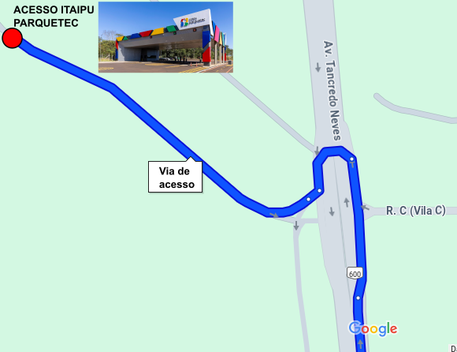
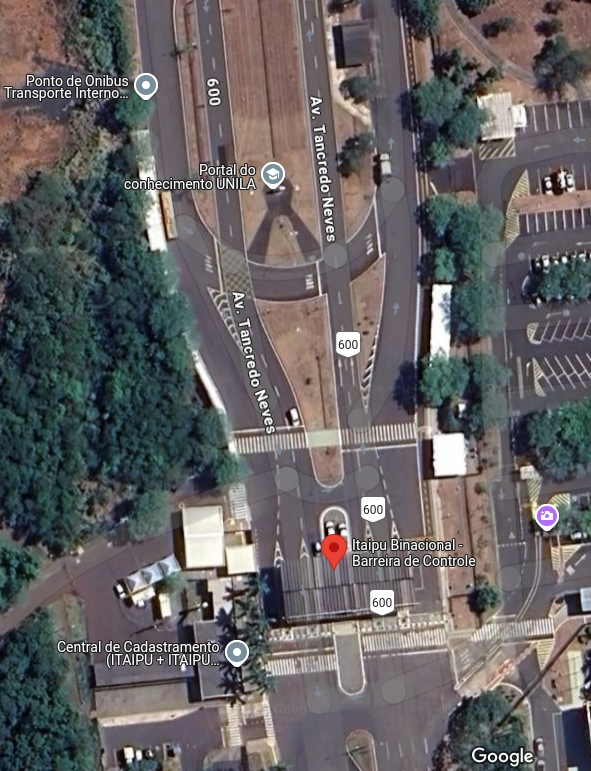

<section id="light-card">
    <div class="p-2 container col-sm-12 col-lg-8 text-justify">
        <h2 class="p-4 text-center">Transporte</h2>

        <h3>Ônibus do Evento</h3>
        <p class="lead">A ERAD/RS disponibilizará 2 ônibus no período da manhã para levar os participantes do centro da cidade ao local do evento.</p>
        <p class="lead">Os ônibus terão como ponto de partida os hotéis (1) JL Bourbon e Viale Iguassu (Av. Costa e Silva, 154), depois uma parada próximo ao hotel (2) Nadai (Av. República Argentina, 1332) e a 
            última parada em frente ao (3) 34.o Batalhão (Av. República Argentina com Av. Brasil).</p>
        

        <p>O ônibus esperará por 5 minutos em cada local e seguirá viagem.</p>
         <p class="lead"><b>Horários</b></p>
         <ul>
             <li>ônibus 1 – JL Bourbon: 7:20, passando nos demais pontos na sequência.⁠ </li>
             <li>⁠ônibus 2 – JL Bourbon: 7:45, passando nos demais pontos na sequência.</li>
         </ul> 
        <p class="lead">Os ônibus que farão o trecho são das empresas Marques Turismo e MN Turismo (foto abaixo).</p>
        
        <br>
        <br>
        <hr />
        
        <h3>Carro, Uber ou Táxi</h3>
        <p class="lead">Participantes que virão de Taxi ou UBER, confirmar se o Uber está cadastrado na Foztrans (agência de trânsito de Foz).</p>
        <p class="lead">De carro - Necessário enviar para a coordenação do evento: <b>marca/modelo, cor e placa do veículo até o dia 14/04</b>. Se houver motorista não inscrito no evento, enviar também CPF e RG. 
            Sem cadastro prévio do veículo, não é possível acessar o Parquetec.</p>
        <br>
        <p class="lead">Nestes casos, o acesso é feito pelo Portal do Itaipu Parquetec. Av. Tancredo Neves, 6731 - Jardim Itaipu, Foz do Iguaçu - PR<br>
        <a href="https://maps.app.goo.gl/osYru99QwQosSNV3A">Rota Portal Parquetec - Estacionamento.</a>  </p>
        
        
        <br>
        <br>
        <hr />
        
        <h3>Transporte Coletivo</h3>
        <p class="lead"> Temos as seguintes linhas que passam no ponto de ônibus da Barreira de Controle da Itaipu: </p>
         <ul>
             <li>⁠Linha 065 - Universitária: Sai do Terminal de Transporte Urbano (Centro) </li>
             <li>⁠Linha 0101-0102 - Vila C Norte - Vila C Sul: Sai do Terminal de Transporte Urbano (Centro)</li>
             <li>⁠Linha 0320 - Interbairros: Linha circular entre alguns bairros da cidade</li>
             <li>⁠Linha 0040 - Conjunto C (via Rodoviária): Sai do Terminal de Transporte Urbano (Centro)</li>
         </ul> 

       <p class="lead">Para acessar os horários das linhas, acesse: <a href="https://foztrans.pmfi.pr.gov.br/publicacao-468/">Transporte Coletivo Foz</a> </p>
        Há dois aplicativos que podem facilitar com os horários e pontos de embarque: <a href="https://moovitapp.com/index/pt-br/transporte_p%C3%BAblico-Foz_do_Iguacu-4111">Moovit</a> 
        ou o "Único FozTrans" (disponível para Apple e Android) </p>
        <br>
        <br>
        <hr />
        
        <h3>Transporte Interno</h3>
        <p class="lead">Para quem usar o transporte coletivo e parar na barreira da Itaipu, poderá utilizar o transporte interno do parque desde que esteja com o crachá de credenciamento da Itaipu.</p>
        <p class="lead">Neste caso, a entrada deve ser feita pela barreira de controle principal (catraca de acesso).</p>
        

        <p class="lead">O ônibus de Transporte Interno possui três paradas: Barreira da Itaipu / Cineteatro Barrageiros / Itaipu Parquetec. Você deverá desembarcar no Itaipu Parquetec.</p>

        <a href="https://habitante.itaipuparquetec.org.br/transporte-coletivo-itaipu-parquetec/">Horários ônibus interno</a>

    </div>
</section>
        
        


        

        

